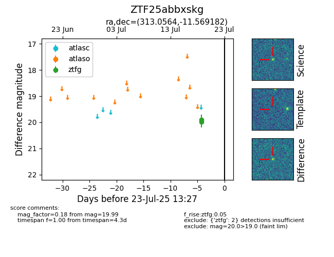

Target ZTF25abbxskg at 2025-07-23 13:27, see:
FINK: fink-portal.org/ZTF25abbxskg
Lasair: lasair-ztf.lsst.ac.uk/objects/ZTF25abbxskg
ALeRCE: alerce.online/object/ZTF25abbxskg
alt names
ZTF25abbxskg (ztf,fink)
coordinates:
equatorial (ra, dec) = (313.0564,-11.56918)
galactic (l, b) = (36.0550,-32.00507)
photometry
last ztfg=19.99
2 ztfg detections
